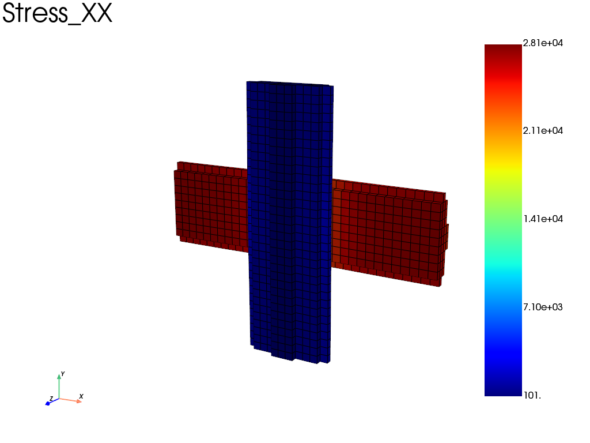

Note
Go to the end to download the full example code.
In-plane periodic boundary conditions on a woven composite ply
A 3D unit cell of a composite ply, made of two orthogonal elliptical fiber
bundles embedded in a soft matrix, is loaded by a mean in-plane strain
\(E_{xx} = 0.1\). fedoo.constraint.PeriodicBC with dim=2
makes the faces normal to \(x\) and \(y\) periodic while the top and
bottom faces remain free, which models a ply of finite thickness that is
periodic in its plane. The mean in-plane stress is read as the reaction to the
MeanStrain degrees of freedom, and the stress in the fibers is plotted.
The mesh has about 14,000 hex8 elements (49,000 degrees of freedom), which
makes this example heavier than most of the basic ones.
import numpy as np
import fedoo as fd
Dimension of the problem
fd.ModelingSpace("3D")
<fedoo.core.modelingspace.ModelingSpace object at 0x73e8b1d5c340>
Definition of the Geometry
A structured mesh guarantees matching nodes on opposite faces. Two elliptical masks represent orthogonal fiber bundles at different positions through the thickness, similar to the warp and weft bundles of a woven ply.
mesh = fd.mesh.box_mesh(
nx=17 * 2,
ny=17 * 2,
nz=7 * 2,
x_min=0,
x_max=1,
y_min=0,
y_max=1,
z_min=0,
z_max=0.3,
elm_type="hex8",
)
element_centers = mesh.element_centers
fiber_semi_width = 0.16
fiber_semi_thickness = 0.045
fiber_x = ((element_centers[:, 1] - 0.5) / fiber_semi_width) ** 2 + (
(element_centers[:, 2] - 0.1) / fiber_semi_thickness
) ** 2 <= 1
fiber_y = ((element_centers[:, 0] - 0.5) / fiber_semi_width) ** 2 + (
(element_centers[:, 2] - 0.2) / fiber_semi_thickness
) ** 2 <= 1
fiber_elements = np.flatnonzero(fiber_x | fiber_y)
matrix_elements = np.flatnonzero(~(fiber_x | fiber_y))
mesh.add_element_set(fiber_elements, "All_fibers")
mesh.add_element_set(matrix_elements, "All_matrix")
# Elastic properties of the fibers and matrix (MPa)
E_fiber = 250e3
E_matrix = 4e3
nu_fiber = 0.3
nu_matrix = 0.33
Set of nodes for boundary conditions
center = mesh.nearest_node(mesh.bounding_box.center)
Material definition
young_modulus = E_fiber * np.ones(mesh.n_elements)
poisson_ratio = nu_fiber * np.ones(mesh.n_elements)
young_modulus[matrix_elements] = E_matrix
poisson_ratio[matrix_elements] = nu_matrix
fd.constitutivelaw.ElasticIsotrop(
young_modulus,
poisson_ratio,
name="ElasticLaw",
)
<fedoo.constitutivelaw.elastic_isotrop.ElasticIsotrop object at 0x73e8bfd33790>
Weak form, assembly and linear static problem
wf = fd.weakform.StressEquilibrium("ElasticLaw")
assemb = fd.Assembly.create(wf, mesh)
pb = fd.problem.Linear(assemb)
Boundary conditions
macro_strain = [0.1, 0, 0] # [EXX, EYY, EXY], EXY = engineering shear strain
# Apply in-plane periodic boundary conditions (dim=2): the faces normal to x
# and y are periodic, the top and bottom faces (z) remain free. Only the three
# in-plane mean strain components EXX, EYY, EXY are added to the problem.
pb.bc.add(
fd.constraint.PeriodicBC(
periodicity_type="small_strain",
dim=2,
)
)
# Block a node on the center to avoid rigid body motion
pb.bc.add("Dirichlet", center, "Disp", 0)
pb.bc.add("Dirichlet", "MeanStrain", macro_strain)
List of boundary conditions:
number of bc = 3
0: Dirichlet -> 'E_xx' for 1 nodes set to 0.1
1: Dirichlet -> 'E_yy' for 1 nodes set to 0
2: Dirichlet -> 'E_xy' for 1 nodes set to 0
Solve
pb.solve()
Post-treatment
The mean stress is the reaction to the MeanStrain degrees of freedom
divided by the cell volume. It could also be computed from its definition,
mesh.integrate_field(res["Stress"][i]) / volume for i in
[0, 1, 3]. The same holds for the mean strain, as long as the cell has no
voids (the strain of a void cannot be computed).
res = pb.get_results(assemb, ["Stress", "Strain", "Disp", "MeanStrain"])
volume = mesh.bounding_box.volume # total volume of the bounding_box
# mean in-plane stress [Sxx, Syy, Sxy] (averaged over the ply thickness)
mean_stress = pb.get_ext_forces("MeanStrain") / volume
mean_strain = pb.get_disp("MeanStrain")
print("Mean strain ([Exx, Eyy, Exy], Exy = 2 eps_xy): ", mean_strain)
print("Mean stress ([Sxx, Syy, Sxy]): ", mean_stress)
print("Elastic Energy: " + str(pb.get_elastic_energy()))
Mean strain ([Exx, Eyy, Exy], Exy = 2 eps_xy): [[0.1]
[0. ]
[0. ]]
Mean stress ([Sxx, Syy, Sxy]): [[ 2.406e+03]
[ 2.152e+02]
[-2.228e-13]]
Elastic Energy: 36.093707235615014
Stress in the fibers
Results can be restricted to an element set, here the fibers only. To
visualize the full results in ParaView, write the nodal results to a vtk file,
e.g. pb.get_results(assemb, ["Stress", "Disp"], "Node").save(...).
res_fibers = pb.get_results(
assemb, ["Stress", "Strain", "Disp"], element_set="All_fibers"
)
res_fibers.plot("Stress", "XX")

Total running time of the script: (0 minutes 5.436 seconds)